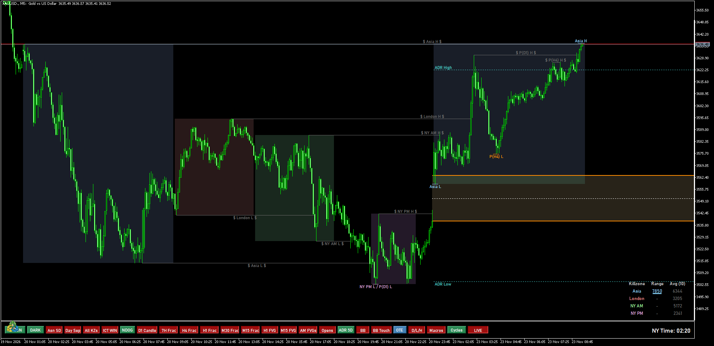

01. Custom MQL5 Indicators
All-in-One Session, Killzone & Market Structure HUD
Built for a clean, customizable workspace with a bottom toggle bar and tab controls that can be hidden whenever you want a full-screen chart. Switching HUD OFF clears active chart overlays and puts the indicator into sleep mode so it does not consume memory or slow down your terminal—complete with a bottom-right NY Time clock, Killzone Range vs. Avg(10) table, and top discipline banner.

class="w-full h-auto max-h-[540px] object-contain mx-auto rounded" onerror="this.style.display='none'; this.nextElementSibling.style.display='flex';">COMPLETE FEATURE LIST (FROM CHART HUD)
HUD On/Off Sleep & Theme Controls
✓HUD ON / OFF: Sleep mode removes active layers and halts memory/processing when off.
✓DARK & LIVE: Instant theme switching and live stream status.
✓RR Tool: OFF / ON: Quick toggle and clean full-screen chart view.
Sessions, Killzones & Time Cycles
✓Asn SD & Day Sep: Asian standard/session markers and daily session separators.
✓All KZs & ICT WIN: Asia, London, NY AM, and NY PM killzones plus windows.
✓NDOG, Macros, Cycles & NY Time: Time cycles, macros, and live NY clock.
Multi-Timeframe Fractals & Candles
✓D1 Candle (C1 / C2 / C3): Daily candle structure and multi-candle sequence markers.
✓Fractal Toggles: Independent switches for 7H, H4, H1, M30, and M15 Frac.
FVGs, Breaker Blocks & Liquidity
✓Fair Value Gaps: Dedicated toggles for H1 FVG, M15 FVG, and AM FVGs.
✓Breaker Blocks: BB structure zones and BB Touch reaction markers.
✓Levels & OTE: Opens, ADR 5D (ADR High), OTE, and D/L/H highs/lows.
Killzone Range vs. 10-Day Average
✓Live Range Readout: Displays current session Range alongside Avg (10).
✓All 4 Sessions: Side-by-side comparison for Asia, London, NY AM, and NY PM.
Discipline Banner & Clean View
✓Execution Reminder: Top-center guard prompt (“No trade, wait for A+ setup”).
✓On-Demand Visibility: Hideable controls and sleep mode keep charts uncluttered.
Hotu Standalone Risk/Reward Calculator .mq5
A precision risk-management tool built directly into MetaTrader 5. Designed to eliminate manual calculation errors during high-volatility sessions by automating lot sizing, stop-loss points, and multi-tier profit targets (1:1, 1:2, 1:3) calibrated to strict account balance and risk limits.
Auto Lot & Risk Math
Instantly computes required lot size based on custom account sizes ($1.5k, $5k, $10k+) and risk tolerances (0.2%, 0.5%, 1%, 1.5%).
Multi-Tier TP Mapping
Renders progressive risk-to-reward targets (1:1, 1:2, and 1:3 levels) complete with exact price tags for Entry, SL, and TP.
Multi-Asset Intelligence
Auto-detects symbol types (BTC, Forex, Nasdaq) to dynamically apply correct point values, pip parameters, and offset rules.
Custom Alert Lines
Supports dropping interactive alert lines onto the active chart for precise session boundary and liquidity level tracking.
Dark & Light Themes
Responsive UI themes built with sleep-mode optimizations to guarantee zero lag on high-frequency tick data streams.
Prop Guard Timers
Equipped with built-in minimum duration timers and persistent drawing modes to protect prop firm evaluation accounts.
Live Chart Evidence & TP Tier Gallery
Full uncropped chart captures demonstrating automated lot calculation, Risk/Reward targets (1:1, 1:2, 1:3), and execution markers.
TP 1:1 Risk/Reward Mapping
Shows precise entry marker at 3780.59 with automated SL and target box calculation.
TP 1:2 Extension Tier
Multi-tier target level rendering exact take-profit price targets on volatility.
TP 1:3 Maximum Extension
Full institutional target execution capturing structural swing highs seamlessly.